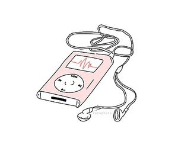

Jada Smith
|  |
{
"github username": ["jsmith698","https://github.com/jsmith698/jsmith698.git"],
"pic": "https://avatars.githubusercontent.com/u/85500280?v=4",
"major/minor": "CIS",
"grad year": "Fall 2021",
"experience": "When it comes to experience, I have some experience in java and python but would love to learn more about terminals as I've used them before with java, python and when I took CIS 344 last semester which was IT infrastructure but I'd love to be able to navigate faster through folders and just being able to do more using a terminal. I also want to experience learning how to use parcel as I've never used it before and would be not only a good skill to learn but use for certain jobs as well.",
"interests": "My interests are reading, video games, and music",
"side projects": "I haven't worked on any side projects nor are there any side projects that I'm working on but hopefully will get to do some in this class and with others."
}